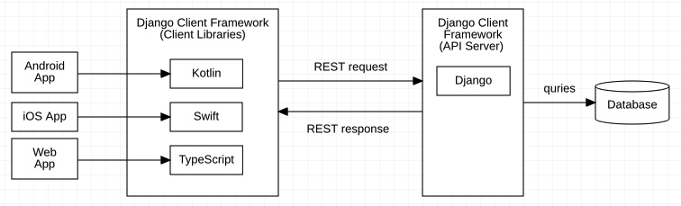

Introduction to the Framework
An Overview of the Framework
Django Client Framework is meant to work with the famous python server framework Django, and its popular REST API library, Django Rest Framework.
The Django Client Framework includes client libraries in multiple languages, which enables frontend developers to query the database using native programming languages, without having to worry about the communication details at the REST API level.
For instance, when a Product model is defined in Django:
class Product(Model):
barcode = CharField()
With the Django Client Framework, a corresponding model in the frontend language is defined.
class Product extends Model {
barcode: str;
}
class CartItem extends Model {
static final objects = CollectionManager(CartItem);
String get barcode => props["barcode"];
set barcode(String val) => props["barcode"] = val;
}
class Product(
val barcode: String
): Model
struct Product: Model {
var barcode: String
}
Then to query get a Product object in the frontend, you can use the API provided by the Django Client Framework, which is extremely similar to the Django’s:
let results: PageResult<Product> = await Product.objects.page()
let product: Product = results[0]
product.barcode = "xxyy"
await product.save()
PageResult<Product> results = await Product.objects.page();
final product: Product = results.objects[0];
product.props.barcode = "xxyy";
await product.save();
val result: PageResult<Product> = Product.objects.page()
val product: Product = results[0]
product.barcode = "xxyy"
product.save()
let results: PageResult<Product> = try Product.objects.page().await()
let product: Product = results[0]
product.barcode = "xxyy"
product.save().await()
Note
The Django Client Framework has two components, the frontend libraries, and the backend API server based on Django. You need to install both components into your project.
Internally, a communication protocol based on REST API is used between the frontend and the backend. The protocol is considered an internal detail of the Django Client Framework, and you should not need to worry about it.
Getting Started with the Backend
Warning
This guide assumes that you are familiar with Django. Before starting, you may want to go through Django’s tutorial first: https://docs.djangoproject.com/en/3.2/
Installation with pip3+git
Django Client Framework (Django) requires python3.8+ and Django 3.0+. To
install Django Client Framework from the GitHub repository:
- With
pip: pip3 install git+https://github.com/kaleido-public/django-client-framework.git@staging
- With
poetry: poetry add git+https://github.com/kaleido-public/django-client-framework.git@staging
Configure Django’s settings.py file
In settings.py for your Django app, simply add at the end of the file:
import django_client_framework.settings
django_client_framework.settings.install(
INSTALLED_APPS,
REST_FRAMEWORK,
MIDDLEWARE,
AUTHENTICATION_BACKENDS
)
Warning
The line must be added after where the INSTALLED_APPS, REST_FRAMEWORK,
MIDDLEWARE and AUTHENTICATION_BACKENDS global variables are defined,
because the .install() function modifies these variables by reference.
An example of the settings.py file is as follows:
import django_client_framework.settings
# ... other configs
INSTALLED_APPS = [
'django.contrib.admin',
'django.contrib.auth',
'django.contrib.contenttypes',
'django.contrib.sessions',
'django.contrib.messages',
'django.contrib.staticfiles',
]
MIDDLEWARE = [
'django.middleware.security.SecurityMiddleware',
'django.contrib.sessions.middleware.SessionMiddleware',
'django.middleware.common.CommonMiddleware',
'django.middleware.csrf.CsrfViewMiddleware',
'django.contrib.auth.middleware.AuthenticationMiddleware',
'django.contrib.messages.middleware.MessageMiddleware',
'django.middleware.clickjacking.XFrameOptionsMiddleware',
]
REST_FRAMEWORK = {
# .. your settings
}
AUTHENTICATION_BACKENDS = [
# .. your settings
]
# Add this line
django_client_framework.settings.install(
INSTALLED_APPS,
REST_FRAMEWORK,
MIDDLEWARE,
AUTHENTICATION_BACKENDS
)
Add routing handlers to urls.py
Next, append Django Client Framework’s API route handlers to your app’s
urls.py file:
from django.urls import path, include
import django_client_framework.api.urls
app_name = "myapp"
urlpatterns = [
... # other routes
path("<str:locale>/api/<str:version>", include(django_client_framework.api.urls))
]
Note
The .urlpatterns variable provided by the Django Client Framework is just
a list of routes and handlers. You can append this variable to your
urlpatterns list flexiably. Internally, the .urlpatterns is defined as
follows:
# django_client_framework.api.urls.urlpatterns
urlpatterns = [
path("<str:model>", ModelCollectionAPI.as_view(), name="model_collection"),
path("<str:model>/<int:pk>", ModelObjectAPI.as_view(), name="model_object"),
path(
"<str:model>/<int:pk>/<str:target_field>",
ModelFieldAPI.as_view(),
name="model_field",
),
]
Add a Serializable model
To add a model, create a model that extends from
django_client_framework.models.Serializable. For instance:
from django_client_framework.models import DCFModel, Serializable
from django.db.models import CharField
class Product(DCFModel, Serializable):
barcode = CharField(max_length=32)
The Serializable class requires Product to implement a class method
named .get_serializer_class(), which should return a DCFModelSerializer
class. This class is responsible for converting back and forth betwen a JSON
object and a class object, ie, serialization and deserialization.
To define a DCFModelSerializer for Product, create another class that
inherits from DCFModelSerializer:
from django_client_framework.serializers import DCFModelSerializer
class ProductSerializer(DCFModelSerializer):
class Meta:
model = Product
fields = ["id", "type", "created_at", "barcode"]
Error
DCFModelSerializer is a subclass of ModelSerializer in Django Rest Framework. Always use DCFModelSerializer, or the APIs don’t work!
Finally, we return this class from the .get_serializer_class() method. The final code
looks like this:
from django_client_framework.models import DCFModel, Serializable
from django_client_framework.serializers import DCFModelSerializer
from django.db.models import CharField
class Product(DCFModel, Serializable):
barcode = CharField(max_length=32)
@classmethod
def get_serializer_class(cls, version, context):
return ProductSerializer
class ProductSerializer(DCFModelSerializer):
class Meta:
model = Product
fields = ["id", "type", "created_at", "barcode"]
Now you can run migration to apply the new model.
python3 ./manage.py makemigrations
python3 ./manage.py migrate
Make an AccessControlled model
Django Client Framework supports both model and object level authorizations. By default, all objects are only readable and writable only to superusers. Next, we will give the read permission to the anyone user group, so that the product list is publically visible to anyone visiting our site.
To manage model permission, Product needs to extend the AccessControlled
class, and overrides a class method named .get_permissionmanager_class(). The
.get_permissionmanager_class() class method should return a
PermissionManager class that implements a method named .add_perms(instance).
The default implementation of .get_permissionmanager_class() looks for a class
named PermissionManager in the model class.
To give anyone the read permission to the Product model, we import the
default_groups.anyone and add_perms_shortcut(…) from django_client_framework.permissions and use
them to set the permissions.
from django_client_framework.models import DCFModel, Serializable, AccessControlled
from django_client_framework.serializers import DCFModelSerializer
from django_client_framework.permissions import default_groups, add_perms_shortcut
from django.db.models import CharField
class Product(DCFModel, Serializable, AccessControlled):
barcode = CharField(max_length=32)
@classmethod
def get_serializer_class(cls, version, context):
return ProductSerializer
class PermissionManager(AccessControlled.PermissionManager):
def add_perms(self, product):
add_perms_shortcut(default_groups.anyone, product, "r")
class ProductSerializer(DCFModelSerializer):
class Meta:
model = Product
fields = ["id", "type", "created_at", "barcode"]
Now to refresh the permission stored in the database, run this in Django shell:
python3 ./manage.py shell
# inside shell
from django_client_framework.permissions import reset_permissions
reset_permissions()
Note
Consider running reset_permissions() after the django migrations.
Query objects via HTTP requests
We need to expose the Product model to the REST API by using the
@register_api_model decorator. Add @register_api_model to the Product
class.
from django_client_framework.models import Serializable, AccessControlled
from django_client_framework.serializers import DCFModelSerializer
from django_client_framework.permissions import default_groups, add_perms_shortcut
from django.db.models import CharField
from django_client_framework.api import register_api_model
@register_api_model
class Product(Serializable, AccessControlled):
barcode = CharField(max_length=32)
@classmethod
def get_serializer_class(cls, version, context):
return ProductSerializer
class PermissionManager(AccessControlled.PermissionManager):
def add_perms(self, product):
add_perms_shortcut(default_groups.anyone, product, "r")
class ProductSerializer(DCFModelSerializer):
class Meta:
model = Product
fields = ["id", "type", "created_at", "barcode"]
Now that the Product model is correctly configured, you can create a
Product object in Django and visit in via the REST API.
python3 ./manage.py shell
# inside shell
from .product import Product
Product.objects.create(barcode="xxyy")
Start the django development server:
python3 ./manage.py runserver # Starting development server at http://127.0.0.1:8000/
To visit the list of products, send a GET request to this url:
curl http://localhost:8000/product/
# {
# pages_count: 1,
# objects_count: 1,
# limit: 50,
# page: 1,
# objects: [ {id: "...", barcode: "xxyy"} ],
# }
To visit the specific product, send a GET request to this url:
curl http://localhost:8000/product/<id>
# {id: "...", barcode: "xxyy"}
See also
Besides retrieving the object, creation, deleting, and modifications are also supported through POST, DELETE, PUT REST requests respectively.
Query relational objects via HTTP
The Django model system allows you to define relational data. For instance, we
can add the Brand class in Django. A brand can have multiple products.
Conversely, a product is made by one brand.
Therefore, we define the two classes as follows:
from django_client_framework.models import DCFModel, Serializable, AccessControlled
from django_client_framework.serializers import DCFModelSerializer
from django_client_framework.permissions import default_groups, add_perms_shortcut
from django_client_framework.api import register_api_model
from django.db.models import CharField, ForeignKey, CASCADE
@register_api_model
class Brand(DCFModel, Serializable, AccessControlled):
name = CharField(max_length=16)
@classmethod
def get_serializer_class(cls, version, context):
return BrandSerializer
class PermissionManager(AccessControlled.PermissionManager):
def add_perms(self, brand):
add_perms_shortcut(default_groups.anyone, brand, "r")
class BrandSerializer(DCFModelSerializer):
class Meta:
model = Brand
fields = ["id", "type", "created_at", "name"]
@register_api_model
class Product(Serializable, AccessControlled):
barcode = CharField(max_length=32)
brand = ForeignKey("Brand", related_name="products", on_delete=CASCADE, null=True)
@classmethod
def get_serializer_class(cls, version, context):
return ProductSerializer
class PermissionManager(AccessControlled.PermissionManager):
def add_perms(self, product):
add_perms_shortcut(default_groups.anyone, product, "r")
class ProductSerializer(DCFModelSerializer):
class Meta:
model = Product
fields = ["id", "type", "created_at", "barcode", "brand_id"]
After applying migrations, add a Product object, and a Brand object:
nike = Brand.objects.create(name="nike")
Product.objects.create(barcode="xxyy", brand=nike)
Now to retrieve the Product object, send a GET request:
curl http://localhost:8000/product/<id>
# {id: "...", barcode: "xxyy", brand_id: "..."}
Now to query the product’s brand, send a GET request to this url:
curl http://localhost:8000/product/<id>/brand
# {id: "...", name: "nike"}
Note
The above query is the same as the query below, which returns the same brand object.
curl http://localhost:8000/brand/<brand-id>
# {id: "...", name: "nike"}
Conversely, we can retrieve all products of the brand:
curl http://localhost:8000/brand/<brand-id>/products
# {
# pages_count: 1,
# objects_count: 1,
# limit: 50,
# page: 1,
# objects: [ {id: "...", barcode: "xxyy"} ],
# next:null,
# previous:null
# }
Warning
The last part of the url, /products, comes from the
related_name="products" argument when defining the brand ForeignKey
field on Product. This is the same .related_name in Django that allows
you to write
Brand.objects.filter(products__in=[...])
Getting Starting with Client Libraries
See also
This tutorial follows the previous tutorial “Getting Started with the Backend”. In this section, we assume the Product and Brand models are correctly set up.
Instead of sending HTTP requests manually to query the backend REST API, Django Client Framework’s client libraries support quering the backend in frontend’s native programming language, with a set of APIs that are similar to Django’s QuerySet.
Install client libraries
# With npm
npm install django-client-framework
# Or with yarn
yarn add django-client-framework
# With Dart
dart pub add django-client-framework --git-url=https://github.com/kaleido-public/django-client-framework-dart.git
# Or with Flutter
flutter pub add django-client-framework --git-url=https://github.com/kaleido-public/django-client-framework-dart.git
Define a model class
Since a Product model is defined at the Django backend, we need to define a Product model that mirrors the backend in the frontend language.
Warning
A more accurate statement is that the Product model in the frontend mirrors the ProductSerializer in the backend. This is because a serializer can support fields that doesn’t exist on the model, for instance, through the SerializerMethodField.
Similar to the Django models, the Product model in the frontend should also extend the class Model base class.
import { Model, CollectionManager } from "django-client-framework"
class Product extends Model {
static readonly objects = new CollectionManager(Product)
id!: string
barcode: string = ""
brand_id?: number
}
import 'package:django_client_framework/django_client_framework.dart';
class Product extends Model {
static final objects = CollectionManager(Product);
@override
String get id => props["id"];
String get barcode => props["barcode"];
set barcode(String val) => props["barcode"] = val;
String get brandID => props["brand_id"];
set brandID(String val) => props["brand_id"] = val;
}
Retrieve a model object
To retrieve a Product instance, we use the CollectionManager class. To retrieve an instance of the CollectionManager, you can either create it yourself, or access it through tbe .objects static member on the Product class.
import { Ajax } from "django-client-framework"
Ajax.url_prefix = "http://localhost:8000"
let page = await Product.objects.page({})
console.log(page)
/*
PageResult {
page: 1,
limit: 50,
pages_count: 1,
objects_count: 1,
objects: [ Product { id: "...", barcode: 'xxyy', brand_id: "..." } ]
}
*/
See also
Besides retrieving object, the client libraries also support methods that modify and delete objects. See the full set of APIs here. [todo]
Retrieve a relational object
First, we first add a Brand model:
import { Model, CollectionManager } from "django-client-framework"
class Product extends Model {
static readonly objects = new CollectionManager(Product)
id!: string
barcode: string = ""
brand_id?: number
}
class Brand extends Model {
static readonly objects = new CollectionManager(Brand)
id!: string
name: string = ""
}
import 'package:django_client_framework/django_client_framework.dart';
class Product extends Model {
static final objects = CollectionManager(Product);
@override
String get id => props["id"];
String get barcode => props["barcode"];
set barcode(String val) => props["barcode"] = val;
String get brandID => props["brand_id"];
set brandID(String val) => props["brand_id"] = val;
}
class Brand extends Model {
static final objects = CollectionManager(Brand);
@override
String get id => props["id"];
String get name => props["name"];
set name(String val) => props["name"] = val;
}
To access the Brand object on the product, we add a brand field of the RelatedObjectManager type to Product, and a products field of the RelatedCollectionManager type to Brand.
import { Model, CollectionManager, RelatedObjectManager } from "django-client-framework"
class Product extends Model {
static readonly objects = new CollectionManager(Product)
get brand() { return new RelatedObjectManager(Brand, this, "brand") }
id!: string
barcode: string = ""
brand_id?: number
}
class Brand extends Model {
static readonly objects = new CollectionManager(Brand)
get products() { return new RelatedCollectionManager(Product, this, "products") }
id!: string
name: string = ""
}
import 'package:django_client_framework/django_client_framework.dart';
class Product extends Model {
static final objects = CollectionManager(Product);
@override
String get id => props["id"];
String get barcode => props["barcode"];
set barcode(String val) => props["barcode"] = val;
String get brandID => props["brand_id"];
set brandID(String val) => props["brand_id"] = val;
RelatedObjectManager<Brand, Product> get brand =>
RelatedObjectManager(Brand, this, 'brand');
}
class Brand extends Model {
static final objects = CollectionManager(Brand);
@override
String get id => props["id"];
String get name => props["name"];
set name(String val) => props["name"] = val;
}
We can retrieve the product, then get the brand object off the product:
import { Ajax } from "django-client-framework"
import { Product } from "./models"
Ajax.url_prefix = "http://localhost:8000"
let product = await Product.objects.get({ id: "..." })
console.log(product)
// Product { id: "...", barcode: 'xxyy', brand_id: "..." }
let nike = product.brand.get()
console.log(nike)
// Brand { id: "...", name: 'nike' }
import 'package:django_client_framework/django_client_framework.dart';
ajax.endpoints = [
APIEndpoint(
scheme: "http",
host: "localhost",
urlPrefix: "en/api/v1/",
port: 8000,
)
];
final product = await Product.objects.get(id: "...");
// Product { id: "...", barcode: 'xxyy', brand_id: "..." }
final nike = await product.brand.get();
// Brand { id: "...", name: 'nike' }
REST API Endpoints
There are four types of routes:
Collection API, eg. /product
Object API, eg. /product/<id>
Related Collection API, eg. /brand/<id>/products
Related Object API, eg. /product/<id>/brand
The following HTTP methods are supported for each type of routes:
Collection API
GET: lists objects
- Accepted query parameters:
_pageAn integer indicating which page to display
_limitAn integer indicating how many results per page to include
_order_byThis is handled by Django’s .order_by() QuerySet API. Adding
-before the key name sorts the property in the reverse order. Use,to join multiple keys.<property>[__<transformer>...][__<lookup>]Any key names are handled by Django’s QuerySet API. Keys such as
id__in[]are passed to .filter(). See Django’s Field lookups. Any value of the list/array type must have[]appended after the key name.See also
For more examples of the Collection API query parameters, see Pagination and Filtering.
- Example:
GET /product ?id__in[]=id1,id2 &_page=1 &_order_by=-id # Alternatively, separate id__in[] for each array element GET /product ?id__in[]=id1 &id__in[]=id2 &_page=1 &_order_by=-id
POST: creates an object
- Accepted JSON body:
A dictionary accepted by the model’s serializer.
- Example:
Object API
GET: retrieves an object
- Accepted query parameters:
Same as the Collection API. The response is 404 Not Found if the filtered result is empty.
- Example:
PATCH: updates an object
- Accepted JSON body:
A dictionary accepted by the model’s serializer.
- Example:
Pagination (Collection APIs)
Both collection APIs (regular and related) support pagination by these query parameters:
_limitAn integer to specify how many objects to return per page.
_pageAn integer to specify the page number. The first page is
1._orderA pattern that matches
[-]<property>, [-]<property>, .... For example,id, -username. The collection is sorted by the first property in an increasing order, then the other properties are tie breakers in that order. When-is before a property name, it means to sort by that property in the decreasing order.
Server responses:
{ "objects" : [ <model_objects> ], "limit" : int, "objects_count" : int, "page" : int, "pages_count" : int }
objectsThe list of objects.
limitThis is just an echo of the
_limitprovided in the request.objects_countTotal number of objects found in all pages.
pageCurrent page number. Starts from
1.pages_countTotal number of pages.
Filtering (Collection APIs)
The collection API (regular and related) support filtering objects by most properties. There are five types of properties: number, string, datetime, foreign key and reverse foreign key.
You can use the <property>[__<lookup>] to filter the objects. The
__<lookup> is optional. For example, for the CartItem model,
quantity__gte=2 filters the object where the quantity property is
greater than or equal to 2. When the lookup part is left out, it is the
same as <property>__eq, which is exactly equal.
Number property
The supported lookup are:
__eq(default) Equal to. This is the default if
__<lookup>if omitted.__neNot equal to.
__gteGreater than or equal to.
__lteLess than or equal to.
__gtGreater than.
__ltLess than.
__range[]=a,bBetween
aandb, inclusive.__in[]Equal to any number in the list. Eg.
__in[]=1,2,3.__isnull=trueIs null.
String property
The supported lookup are:
__exact(default) Equal to. This is the default if
__<lookup>if omitted.__iexactEqual to, case-insensitive.
__containsString contains a substring.
__icontainsString contains a substring, case-insensitive.
__startswithString that starts with a prefix
__endswithString that ends with a prefix
__istartswithString that starts with a prefix, case-insensitive.
__iendswithString that ends with a prefix, case-insensitive.
__regexString that matches the regex.
__iregexString that matches the regex, case-insensitive.
__in[]Equal to any string in the list. Eg.
__in[]=abc,def,ghi.__isnull=trueIs null.
Datetime property
The following lookups are supported, when supplied values in the format of ISO 8601, for example,
2022-01-14T12:03:03.899967-05:00.
__eq(default) Equal to. This is the default if
__<lookup>if omitted.__neNot equal to.
__gteLater than or equal to (greater than or equal to).
__lteEarlier than or equal to (less than or equal to).
__gtLater than (greater than).
__ltEarlier than (less than).
__range[]=a,bBetween
aandb, inclusive.__in[]Equal to any number in the list. Eg.
__in[]="2022-01-14T12:03:03.899967-05:00","2022-01-14T12:03:03.899967-05:00".__isnull=trueIs null.
In addition to straight lookups, you can extract values such as the year, the month, the date, using transformers. After transforming the value, the output is a number that can be further chained by a lookup of the Number property.
For example, by using the transformer
__year, you can filter objects that are created between2020and2021by using__year__range[]=2020,2021.The full syntax is
<property>[__<transformer>][__<lookup>].Supported transformers are:
__yearYear as an integer.
__monthMonth as an integer between
1and12.__dayDay of the month as an integer.
__weekWeek of the year as an integer.
__week_dayDay of the week as an integer, between 1` and
7.__quarterQuarter of the year as an integer, between 1` and
4.__hourHour of the day as an integer, between 0` and
23.__minuteMinute of the hour as an integer, between 0` and
59.__secondMinute of the minute as an integer, between 0` and
59.
Foreign key property
The supported lookup are:
__exact(default) Equal to. This is the default if
__<lookup>if omitted.__in[]Equal to any id in the list. Eg.
__in[]=346ed90a-2360-4c44-801d-9623b3a1059a,0332daeb-e4b9-46e3-bf8a-0469ff54d1d0.__isnull=trueIs null.
Permission Concepts and Management
Django Client Framework supports four levels of permissions: model, object, model field, and object field. There are four types of permissions: read, write, create, delete. The framework also supports user and group. A user can be added to multiple groups. A permission can be given to a user or a group. All users in a group obtain the permissions that are assigned to the group. By default, all users and groups have no permissions assigned.
The framework uses a deterministic permission model. This means instead of assigning user permissions dynamically as your web service runs, the permissions are determined during django data migrations. You must design the permission structure depending on the user and object relations.
Types of permissions
There are four types of permissions: read, write, create, delete. These permissions are checked when users access the REST API. In particular, when accessing the model collection, the model object, and the related object APIs, the permissions allow for the following HTTP methods:
- read
GET- write
PATCH- create
POSTandPUT- delete
DELETE
Levels of permissions
There are four levels of permissions: model, object, model field, and
object field. In terms of inclusion, model > object > model field > object
field.
- Model permission
When assigning permissions to a model, the permissions apply to all objects of the model class. For instance, you can assign the read permission for the
Productclass to theanyonegroup so that all products are readable to any user.- Object permission
When assigning permissions to an object, the permissions only affects the object but not the others. For instance, you can assign the write permission for a User object to itself, so that any user can modify their own personal data.
- Model field permission
Instead of assigning permissions to a model, in which case the permissions apply to all fields on the model, you can also allow the permission to a particular field of the model. For instance, you may want to give user the read-only permission to a model, except for a particular field, which can be both read and written.
- Object field permission
Similar to model field permission except the permission is assgined to one object instead of all.
Default users
The framework comes with a default user named AnonymousUser. This is a dummy
user object that’s used to assign permissions to any anonymous user. The user
can be accessed by django_client_framework.permissions.default_users.anonymous.
Note
Since in most applications, the permissions for the anonymous user are most
likely a subset of any other user, you should consider assigning the
permissions to the default_groups.anyone group instead.
You can add custom default users that are required by your application using the
@register_default_user decorator.
Default groups
The framework comes with a default group named anyone. This is a dummy group
object that includes all users, including the anonymous user. The user can be
accessed by django_client_framework.permissions.default_groups.anyone.
You can also add custom default groups that are required by your application
using the @register_default_group decorator.
- Example
from .models import Product, User from django_client_framework.permissions import default_groups add_perms_shortcut(default_groups.anyone, Product, "r") user = m.User.objects.create(username="example_user") add_perms_shortcut(user, user, "r") add_perms_shortcut(user, user, "rw", "first_name")
Permissions for API Endpoints
The permission system has the following designs:
1. A
PermissionDeniedexception can be raised from anywhere of the application. APermissionDeniedexception can optionally include four attributes: the model, the instance, the field, and the action, depending on the context of what user is accessing. WhenDEBUG=Falseinsettings.py, if user’s modification action raisesPermissionDeniedand user has noreadpermission to the context, the server responds with a404 Not Foundinstead. This is for hiding the existence of an object whenever possible.handling PermissionDenied(model, instance, field, action): if settings.DEBUG is False: if instance is not None: if user cannot read instance field: raise NotFound(instance) raise original PermissionDenied exception2. When modifying a related object relation, (eg. modifying a product’s brand), the user must have the
writepermission for all the following three kinds of fields:
the relation field on the parent object (eg. the product instance’s
.brandfield)the reverse relation field of the old related object if not
None(eg. the old brand instance’s.productsfield, in order to remove the original relation)the reverse relation field of the new related object if not
None(eg. the new brand instance’s.productsfield, in order to add the new relation)Similarly, when adding or removing objects in a relation collection, (eg. adding to or removing from a brand’s products set), the user must have the
writepermission for all the following three kinds of fields:
the relation field on the parent object (eg. the brand instance’s
.productsfield)the reverse relation field of the old related objects (eg, the
.brandfield for every old product being removed from the brand’s.productsset)the reverse relation field of the new related objects (eg, the
.brandfield for every new proudct being added to the brand’s.productsset)
The permission system affects the REST API request handlers. For each type of requests, the handling algorithm is as the following:
Collection API
GETWhen visiting a model collection, only objects that the authenticated user has permission to view are displayed. If the user has no
readpermission to any object of the model, then the result is an empty list.for each object of the model: if user can read object: include object in the page result else: exclude object from the page result include a message "some results are hidden" respond 200 OK with the filtered list of objectsPOSTWhen creating an object, the authenticated user must have the
createpermission to the model class, and thewritepermission to each related object; otherwise, the server responses with a403 Permission Deniederror. In addition, if the user has thereadpermission to the object created, then the server responses with thecode 201and the created data; otherwise, the server responses withcode 201and a message saying the object is created but you have no permission to view it.if user can create object: for each relation field of the object being posted: if user cannot write to the reverse relation field: raise PermissionDenied(related object, reverse field, "write") create the object if user can read the created object: respond 201 OK with the created object else: respond 200 OK with message "the object is created but you have no permission to view it" else: raise PermissionDenied(model, "create")
Object API
GETWhen visiting a model object, the object is only displayed if the authenticated user has the object-level
readpermission.if user can read object: respond 200 OK with object else: raise PermissionDenied(object, "read")PATCHWhen updating a model object, the authenticated user must have the field-level
writepermissions for each field that is modified. When the object is updated, if the user has thereadpermission, then the server responses with200 OKand the object data; otherwise the server responses with200 OKand a message saying the object is updated but you have no permission to view it.for each field being modified: if user can write to field: if field is a relation: raise FieldIsReadOnly(object, field) else: modify field else: raise PermissionDenied(object, field, "write") if user can read object: respond 200 OK with updated object else: respond 200 OK with message "the object is updated but you have no permission to view it"
Related Object API
GETThe authenticated user must have the object-field-level
readpermission for the parent object (ie, being able to read the product instance’s .brand field), as well as the object-levelreadpermission for the related object (ie, being able to read the brand object).if user can read the parent field: if user can read the related object: respond 200 OK with data else: raise PermissionDenied(related object, "read") else: raise PermissionDenied(parent, "read")PATCHThe authenticated user must have the object-field level
writepermission for the parent object (ie, being able to write the product’s.brandfield). In addition, for both the current and the new related object (unlessNone), the user must have the object-field levelwritepermission for the reverse field (ie, being able to write the current and the new brand’s.productsfield).if user can write to the parent field: for both the current and the new related object: if object object is not None: if user can write to the reverse field: create relation if user can read the related object: respond 200 OK with data else: respond 200 OK with message "the relation is updated but you have no permission to view it" else: raise PermissionDenied(related object, reverse field, "write") else: raise PermissionDenied(parent, field, "write")
API Rate Limiting
Each Model is a resource, and each create, read, update, delete is an action. The API rate limit is set on a per-resource, per-action, and per-ip address basis.
If not specified, the default limit is 60 requests per minute for all resource
actions from any IP. If the limit is exceeded, the response is 429 Too Many
Requets.
class Product(DCFModel, RateLimited):
class RateLimitManager:
def get_rate_limit(self, instance, action, user, version, context) -> str:
# user is the current user identified by the API token, or None
if user:
# assuming there's a staff group
is_staff = user.groups.filter(id=default_groups.staffs.id).exists()
if is_staff:
return "120/min"
return "60/min"
def get_ratelimitmanager(self):
return RateLimitManager()
To set the default limit:
from django_client_framework.api import rate_limit
rate_limit.default = "120/min"